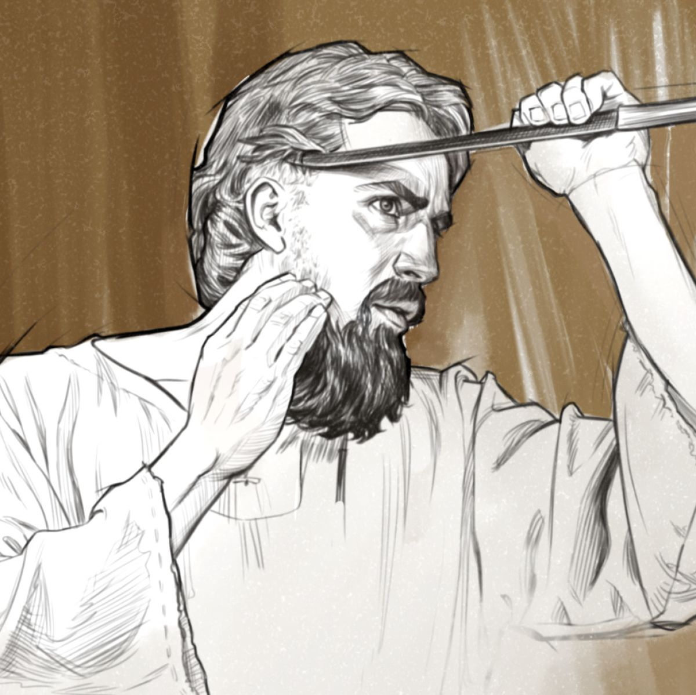
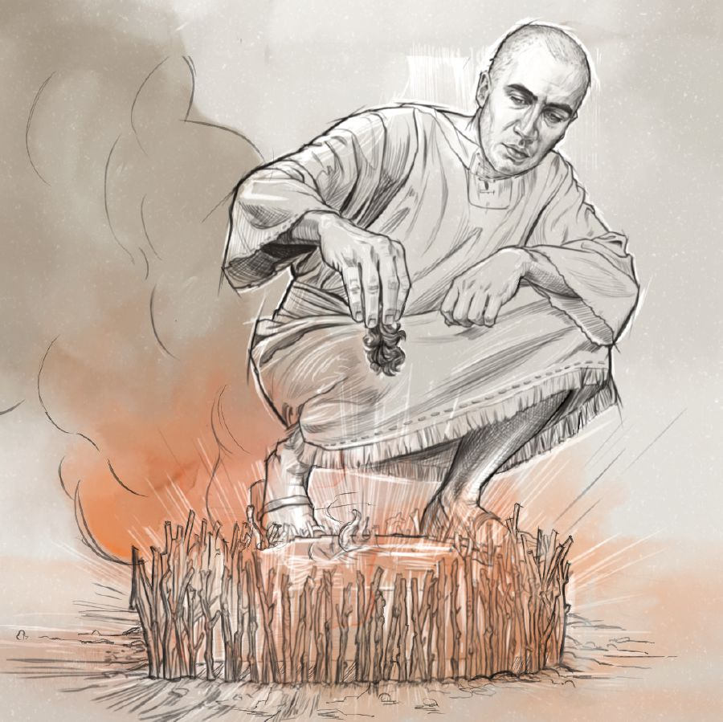
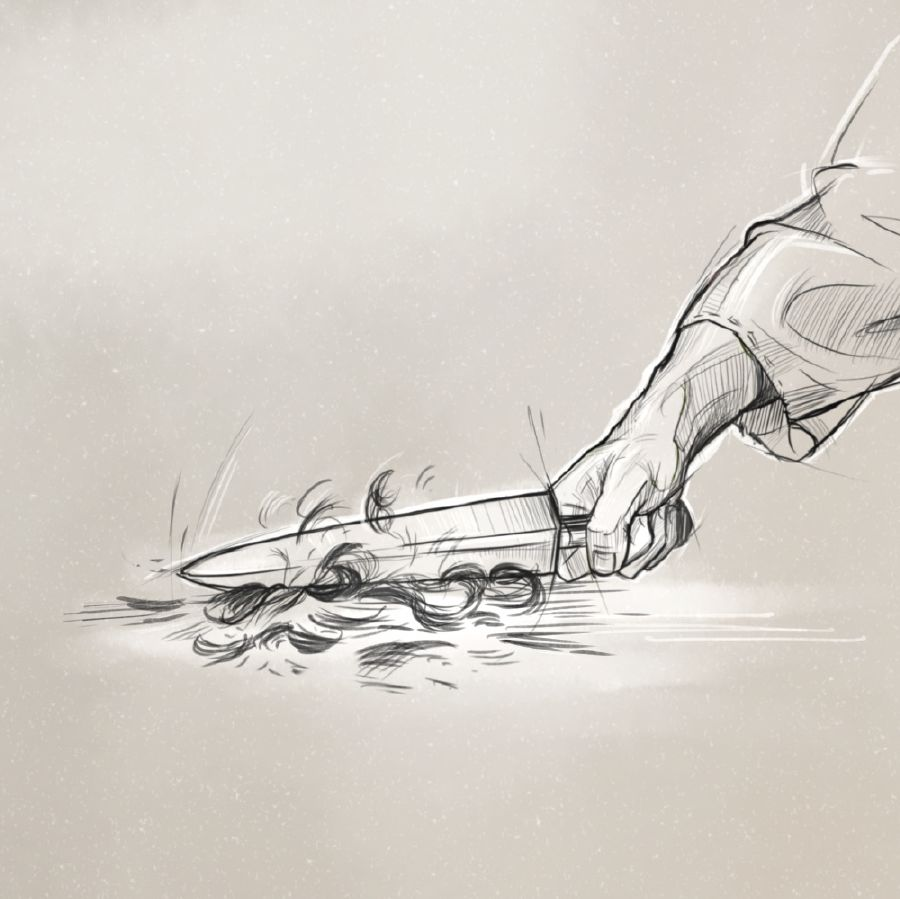
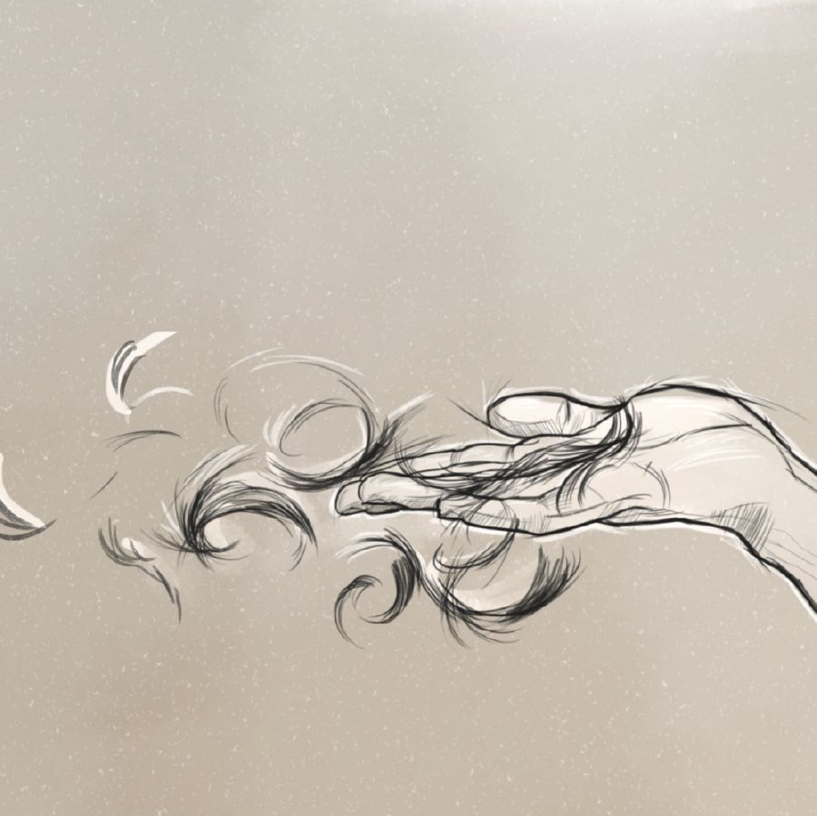
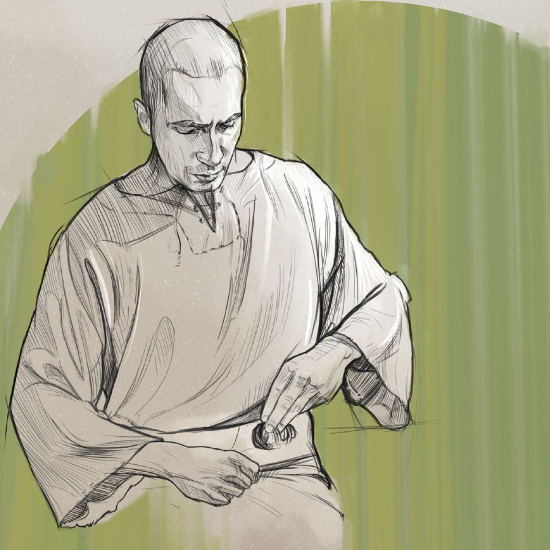

Ezekiel acted out events that would soon unfold in Jerusalem
 “Shave”
The Jews would be attacked and wiped out

“Weigh and Divide”
The judgment would be deliberate and thorough
 “Burn”
Some would die in the city
 “Strike”
Some would be killed outside the city
 “Scatter”
Some would escape, but they would find no peace
 “Wrap”
Some exiles would return to Jerusalem, and pure worship would be preserved